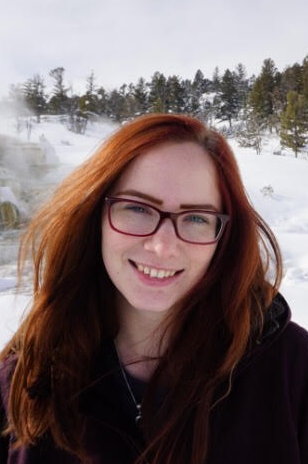

DISCOVER TECH
Registration for our Spring 2020 programs are now open!
For 3rd - 6th Grade Girls
This program meets four times per semester on School of Mines campus. It introduces girls to a variety of STEM subjects through fun, hands-on activities.

- Time: 4:30-5:45
- Day: Offered Monday - Thursday (choose ONE day of the week, as listed below)
- Location: Colorado School of Mines campus
- Cost: $60 (includes program t-shirt)
2020 Spring Session days/dates
- 3rd/4th Grade (choose ONE session):
- MONDAY: February 3, February 24, March 9, April 6
- TUESDAY: February 4, February 25, March 10, April 7
- WEDNESDAY: February 5, February 26, March 11, April 8
- THURSDAY: February 6, February 27, March 12, April 9
- 5th/6th Grade (choose ONE session):
- MONDAY: February 10, March 2, March 16, April 13
- TUESDAY: February 11, March 3, March 17, April 14
- WEDNESDAY: February 12, March 4, March 18, April 15
- THURSDAY: February 13, March 5, March 19, April 16
Our DISCOVER Tech Instructors
 Amanda is a junior studying Chemical/Biochemical Engineering and minoring in Biomedical Engineering and Materials & Metallurgical Engineering. Her passion for chemistry began in 2nd grade and continues to grow every day! She hopes to inspire the same love of learning that has motivated her by presenting STEM topics in a fun and engaging way. In her free time, Amanda enjoys reading, dancing, hiking, and anything else that gives her a deeper appreciation of the world.
Amanda is a junior studying Chemical/Biochemical Engineering and minoring in Biomedical Engineering and Materials & Metallurgical Engineering. Her passion for chemistry began in 2nd grade and continues to grow every day! She hopes to inspire the same love of learning that has motivated her by presenting STEM topics in a fun and engaging way. In her free time, Amanda enjoys reading, dancing, hiking, and anything else that gives her a deeper appreciation of the world.
 Caitlin is a junior in Computer Science at Mines. She’s always had a passion for math and science and recently discovered her love for coding. This is her second year with DECtech and her first year as an instructor. She loves working with the girls and showing them how fun STEM can be. In her free time she enjoys rock climbing, playing volleyball, skiing, and anything else that keeps her active.
Caitlin is a junior in Computer Science at Mines. She’s always had a passion for math and science and recently discovered her love for coding. This is her second year with DECtech and her first year as an instructor. She loves working with the girls and showing them how fun STEM can be. In her free time she enjoys rock climbing, playing volleyball, skiing, and anything else that keeps her active.
 Ellie is a junior in Geological Engineering. She’s originally from Maine and loves to hang out in the snow. She likes working for DECtech because she gets to meet a bunch of smart, fun young girls and share a bit of what got her into the engineering field.
Ellie is a junior in Geological Engineering. She’s originally from Maine and loves to hang out in the snow. She likes working for DECtech because she gets to meet a bunch of smart, fun young girls and share a bit of what got her into the engineering field.
 Gillian is a junior in Electrical Engineering with a minor is Computer Science from Los Gatos, California. She has years of experience teaching and tutoring students in a variety of subjects. The subjects of Electrical Engineering she is interested in are embedded systems and control design. In her spare time, she is either reading or working out with the school’s club triathlon team.
Gillian is a junior in Electrical Engineering with a minor is Computer Science from Los Gatos, California. She has years of experience teaching and tutoring students in a variety of subjects. The subjects of Electrical Engineering she is interested in are embedded systems and control design. In her spare time, she is either reading or working out with the school’s club triathlon team.
 Leah is a senior majoring in Applied Mathematics at Mines. Her math studies have shown her how beautiful and under-appreciated it can be. She has a lot of experience mentoring and working with girls, and is always looking for ways that she can do her part in decreasing the gender gap in the STEM fields.
Leah is a senior majoring in Applied Mathematics at Mines. Her math studies have shown her how beautiful and under-appreciated it can be. She has a lot of experience mentoring and working with girls, and is always looking for ways that she can do her part in decreasing the gender gap in the STEM fields.
 Madeline is a Senior Computer Science major from Seattle, Washington. She is passionate about both her research in Machine Learning and making STEM more accessible to girls. In her free time, she enjoys hiking South Table and cooking with her roommates.
Madeline is a Senior Computer Science major from Seattle, Washington. She is passionate about both her research in Machine Learning and making STEM more accessible to girls. In her free time, she enjoys hiking South Table and cooking with her roommates.
Marie is a junior majoring in Economics and Business. This is her 3rd year working with the program and her first as an instructor. She loves working with the girls and seeing them gain an interest in STEM!
 Megan is a graduate student studying Mechanical Engineering and Robotics. This is her 4th year working with Discover Tech and her 3rd as an instructor. She loves working with all the girls here at DECtech and she hopes to see them all in the STEM field someday!
Megan is a graduate student studying Mechanical Engineering and Robotics. This is her 4th year working with Discover Tech and her 3rd as an instructor. She loves working with all the girls here at DECtech and she hopes to see them all in the STEM field someday!
 Samyuktha is a junior at Mines studying Computer Science with a focus is Robotics & Intelligent Systems. She has worked for DECTech since her first semester at Mines and is excited to be an instructor again! She looks forward to working with all the amazing girls that come through the program, ready to inspire them to pursue a STEM education.
Samyuktha is a junior at Mines studying Computer Science with a focus is Robotics & Intelligent Systems. She has worked for DECTech since her first semester at Mines and is excited to be an instructor again! She looks forward to working with all the amazing girls that come through the program, ready to inspire them to pursue a STEM education.
For a printable flyer (pdf) about the current session of DISCOVER TECH, please click here.
Have questions? Please visit our FAQ page and find answers to popular questions.
To register for this program, click the REGISTER link in the purple navigation bar above.
Need more information? Please email us at stem-tech@mines.edu
Financial scholarships available thanks to our sponsors